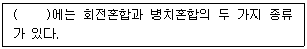
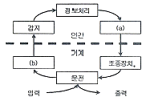
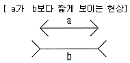
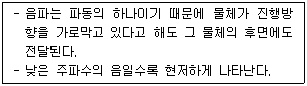
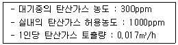
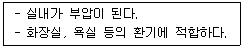

실내건축기사(구) (2011-10-02 기출문제)
1과목: 실내디자인론
1. 실내디자인계획에 사용되는 버블 다이어그램(bubble diagram)에서 일반적으로 표현하지 않는 것은?
- 공간간의 관계
- 공간의 상대적인 크기
- 공간의 상대적인 위치
- 공간의 구체적인 형태
(정답률: 80%)

2. 실내디자인의 프로세스 중 조건설정단계(프로그래밍단계)에 관한 설명으로 옳지 않은 것은?
- 프로젝트의 전반적인 방향이 정해지는 단계이다.
- 실내디자인 프로세스에서 기본설계단계 이후에 진행되는 단계이다.
- 이 단계가 제대로 이루어지지 않으면 프로젝트 진행이 원만하지 못하다.
- 실내디자이너가 설계의뢰인과 협의를 통하여 이해를 확립하는 단계이다.
(정답률: 71%)
3. 주택의 부엌가구 배치유형 중 벽면을 이용함으로써 대규모의 수납공간 확보가 가능하며, 작업 면이 넓어 작업 효율이 가장 좋은 것은?
- 일자형
- ㄴ자형
- ㄷ자형
- 병렬형
(정답률: 86%)
4. 상점계획에서 파사드 구성에 요구되는 소비자 구매심리 5단계에 속하지 않는 것은?
- 주의(sttention)
- 욕망(desire)
- 기억(memory)
- 유인(sttraction)
(정답률: 67%)
5. 광원을 넓은 면적의 벽면에 매입하여 비스타(vista)적인 효과를 낼 수 있는 건축화 조명방식은?
- 광창조명
- 광천장조명
- 캐노피조명
- 밸런스조명
(정답률: 64%)
6. 다음 중 디자인에 있어 대중적이거나 저속하다는 의미를 나타내는 말은?
- 퓨전(Fusion)
- 키치(Kisch)
- 미니멀(Minimal)
- 데지그나레(Designat\re)
(정답률: 58%)
7. 오피스 랜드스케이프(office landscape)에 관한 설명으로 옳지 않은 것은?
- 소음이 발생하기 쉽다.
- 프라이버시의 확보가 용이하다.
- 고정된 칸막이를 사용하지 않고 이동식을 사용한다.
- 변화하는 업무의 흐름이나 작업 패턴에 신속하게 대응 할 수 있다.
(정답률: 86%)
8. 대칭적 균형에 관한 설명으로 옳지 않은 것은?
- 가장 완전한 균형의 상태이다.
- 공간에 질서를 주기가 용이하다.
- 좌우 대칭, 방사 대칭 등이 있다.
- 풍부한 개성을 표현할 수 있어 능동의 균형이라고도 한다.
(정답률: 77%)
9. 디자인 요소 중 선에 관한 설명으로 옳지 않은 것은?
- 수직선은 구조적 높이감을 주며 엄숙한 분위기를 연출한다.
- 사선은 역동적인 이미지를 갖고 있어 동적인 실내 분위기를 연출한다.
- 수평선은 심리적으로 상승감, 존엄성 등을 주로 정적인 분위기를 연출한다.
- 곡선은 부드럽고 미묘한 이미지를 갖고 있어 실내에 풍부한 분위기를 연출한다.
(정답률: 78%)
10. 물체가 잘 보이도록 하는 조명의 조건, 즉 가시성을 결정하는 요소와 가장 거리가 먼 것은?
- 주변과의 대비
- 대상물의 밝기
- 대상물의 질감
- 대상물의 크기
(정답률: 59%)
11. 조명의 연출기법 중 수직벽면을 빛으로 쓸어내리는 듯한 효과를 주기 위해 비대칭 배광방식의 보명기구를 사용하여 수직벽면에 균일한 조도의 빛을 비추는 기법은?
- 스파클 기법
- 월워싱 기법
- 실루엣 기법
- 그레이징 기법
(정답률: 84%)
12. 질감에 관한 설명으로 옳지 않은 것은?
- 모든 물체는 일정한 질감을 갖는다.
- 질감은 만져서만 느껴지는 디자인 요소이다.
- 효과적인 질감의 표현을 위해서는 색채와 조명을 동시에 고려해야 한다.
- 좁은 실내 공간을 넓게 느껴지도록 하기 위해서는 밝은 색의 표면이 곱고 매끄러운 재료를 사용하는 것이 좋다.
(정답률: 58%)
13. 인위적 형태에 관한 설명으로 옳지 않은 것은?
- 인위적 형태는 그것이 속해 있는 시대성을 갖는다.
- 디자인에 있어서 형태는 대부분이 인위적 형태이다.
- 모든 인위적 형태는 단순한 부정형의 형태를 취한다.
- 인간에 의해 인위적으로 만들어진 모든 사물, 구조체에서 볼 수 있는 형태이다.
(정답률: 66%)
14. 실내디자인의 조건 중 기능적 조건의 내용으로 옳지 않은 것은?
- 합목적성, 기능성, 실용성, 효율성 등이 제고되어야 한다.
- 전체 공간구성이 합리적이고, 각 공간의 기능이 최대로 발휘되어야 한다.
- 최소의 자원을 투입하여 공간의 사용자가 최대로 만족 할 수 있는 효과가 이루어지도록 해야 한다.
- 공간의 사용목적에 적합하도록 인간공학, 공간 규모, 배치 및 동선 등 제반사항을 고려해야 한다.
(정답률: 76%)
15. 상품의 진열 범위 중 고객의 시선이 자연스럽게 머물고 손으로 잡기에 편리한 높이인 골드 스페이스(golden space)의 범위로 알맞은 것은?
- 500~800mm
- 600~900mm
- 850~1250mm
- 1200~1500mm
(정답률: 82%)
16. 실내계획 중 치수계획에 관한 설명으로 옳지 않은 것은?
- 치수계획은 인간의 심리적, 정서적 반응을 유발시킨다.
- 복도의 폭과 넓이는 통행인의 수와 관계없이 넓을수록 좋다.
- 최적추수를 구하는 방법으로, α를 조정치수라 할 때, 최소치 +α, 최대치 -α, 목표치 ±α가 있다.
- 치수계획은 생활과 물품, 공간과의 적정한 상호관계를 만족시키는 치수체계를 구하는 과정이다.
(정답률: 84%)
17. 실내디자인 요소에 관한 설명으로 옳은 것은?
- 천장을 높이면 친근하고 아늑한 공간이 되고 낮추면 확대감을 줄 수 있다.
- 바닥은 다른 요소들과 비교하여 매우 고정적 요소로서, 공간의 영역을 조정할 수 없다.
- 눈높이보다 높은 벽은 공간을 분할하고 낮은 벽은 영역을 표시하거나 경계를 나타낸다.
- 천장은 공간을 에워싸는 수직적 요소로 수평방향을 차단하여 공간을 형성하는 기능을 한다.
(정답률: 68%)
18. 단위공간 사용자의 특성, 목적 등에 따라 몇 개의 생활권으로 구분하는 작업을 의미하는 실내디자인 용어는?
- 모듈(Module)
- 샘플링(Sampling)
- 죠닝(Zoning)
- 드로잉(Drawimg)
(정답률: 87%)
19. 다음 중 리듬의 원리와 가장 관계가 먼 것은?
- 반복
- 강조
- 점이
- 대립
(정답률: 33%)
20. 형태의 지각심리에 관한 설명으로 옳지 않은 것은?
- 가까이 있는 것들은 시각적으로 통합되어 무리를 짓는다.
- 사람들은 대상을 될 수 있는 한 간단한 구조로 인식하려한다.
- 유사성은 형태, 크기, 위치 및 의미의 유사성으로 구분될 수 있다.
- 폐쇄되지 않은 형태는 폐쇄된 형태보다 시각적으로 더 안정감이 있다.
(정답률: 73%)
2과목: 색채학
21. 색채조화의 공통되는 원리에 대한 설명으로 틀린 것은?
- 색채조화는 두 색 이상의 배색에 있어서 모호한 점이 있는 배색에만 얻어진다.
- 가장 가까운 색채끼리의 배색은 보는 사람에게 친근감을 주며 조화를 느끼게 한다.
- 배색된 색채들이 서로 공통되는 상태와 속성을 가질 때 그 색채군은 조화된다.
- 배색된 색채들의 상태와 속성이 서로 반대되면서도 모호한 점이 없을 때 조화된다.
(정답률: 74%)
22. 영·헬름홀쯔의 3원색설에 대하여 4원색설을 주장한 사람은?
- 아리스토텔레스
- 헤링
- 맥니콜
- 테모크리토스
(정답률: 86%)
23. 우리 눈의 시각 세포 기능에 대한 설명 중 옳은 것은?
- 원추 세포는 어두운 곳에서의 시각을 주로 담당한다.
- 막대 세포에는 빨강, 노랑, 파랑을 느끼는 기능이 있다.
- 막대 세포의 시감이 비정상적이면 색맹이 된다.
- 원추 세포 어느 정도 이상의 밝은 곳에서만 반응된다.
(정답률: 60%)
24. 다음 색 중 색광의 3원색에 속하지 않는 것은?
- Red
- Blue
- Yellow
- Green
(정답률: 86%)
25. 색료 혼합에 관한 설명 중 틀린 것은?
- 색료 혼합을 감산혼합이라고도 한다.
- 색료 혼합의 3원색을 모두 혼합하면 검정(Black)에 가까운 색이 된다.
- 색료 혼합에서 혼합할수록 명도가 높아지고 채도는 낮아진다.
- 색료 혼합의 2차색은 색광 혼합의 3원색과 같다.
(정답률: 55%)
26. ( )안에 알맞은 것은?

- 감산혼합
- 색료혼합
- 중간혼합
- 보색혼합
(정답률: 46%)
27. 조명에 의하여 물체의 색을 결정하는 광원의 성질은?
- 조명성
- 기능성
- 연색성
- 조색성
(정답률: 74%)
28. 다음 중 기억색에 대한 설명으로 가장 옳은 것은?
- 대상(물체)의 실제색과 같게 기억한다.
- 대상의 실제색보다 그 색의 주된 특징을 더 강하게 기억한다.
- 대상의 실제색보다 더 채도가 낮은 것으로 기억한다.
- 대상의 실제색보다 색상차를 크게 기억한다.
(정답률: 70%)
29. 다음 중 교통 표지판에 주로 이용된 시각적 성질은?
- 명시성
- 심미성
- 반사성
- 편의성
(정답률: 75%)
30. 사람이 물체의 색을 지각하는 3요소는?
- 광원, 관찰자, 물체
- 관찰자, 흡수판, 물체
- 광원, 관찰자, 반사판
- 반사판, 물체, 광원
(정답률: 60%)
31. 스펙트럼 현상을 바르게 설명한 것은?
- 적외선이라고도 한다.
- 우주에 존재하는 모든 발광체의 스펙트럼은 모두 같다.
- 무지개 색과 같이 연속된 색의 띠를 말한다.
- 장파장 쪽이 자색광이고, 단파장 쪽이 적색광이다.
(정답률: 72%)
32. 나뭇잎이 녹색으로 보이는 이유는?
- 주로 녹색의 빛을 반사하기 때문
- 주로 녹색의 빛을 흡수하기 때문
- 주로 녹색의 빛을 투과시키기 때문
- 주로 녹색의 빛을 확산시키기 때문
(정답률: 80%)
33. 가시광선이 주는 밝기의 감각이 파장에 따라서 달라지는 정도가 나타내는 것은?
- 비시감도
- 시감도
- 명시도
- 암시도
(정답률: 57%)
34. 색의 혼합에서 그 결과가 혼합전의 색보다 명도가 높아지는 것은?
- 색광 혼합
- 색료혼합
- 병치혼합
- 중간혼합
(정답률: 51%)
35. 다음 색 중 무채색은?
- 황금색
- 회색
- 적색
- 밤색
(정답률: 79%)
36. 채도변화에서 청색(淸色)이란 어떠한 색들의 혼합인가?
- 청색 + 회색 또는 탁색
- 순색 + 흰색 또는 검정
- 탁색 + 흰색 또는 검정
- 탁색 + 회색
(정답률: 36%)
37. 먼셀의 명도에 관한 설명 중 옳은 것은?
- 명도 표시 수치가 5인 것이 가장 밝다.
- 명도 표시 수치가 낮은 것이 높은 것보다 어둡다.
- 명도 표시 수치가 5인 것이 가장 어둡다.
- 명도 표시 수치와 관계없다.
(정답률: 63%)
38. CIE(국제조명위원회)에서 규정한 표준광(光) 중 맑은 하늘의 평균 낮 광선을 대표하는 광원은?
- 표준광 A
- 표준광 D
- 표준광 C
- 표준광 B
(정답률: 69%)
39. “B+C+W=100” 이란 이론을 만들어낸 학자는?
- 먼셀
- 뉴턴
- 오스트발트
- 맥스웰
(정답률: 78%)
40. 다음 중 가시광선의 파장 영역은?
- 380~780 nm
- 300~600 nm
- 300~650 nm
- 490~900 nm
(정답률: 84%)
3과목: 인간공학
41. 다음 중 촉각적 표시장치에서 사용될 수 있는 촉각적 코드화의 가장 거리가 먼 것은?
- 형상 코드화
- 표면 코드화
- 색상 코드화
- 크기 코드화
(정답률: 67%)
42. 그림과 같은 인간-기계 시스템의 개략적인 도형에서 (a)와 (b)에 해당하는 내용으로 옳은 것은?

- (a) 제어(운동), (b) 표시장치
- (a) 정보판단, (b) 제어(운동)
- (a) 의사결정, (b) 감시
- (a) 감시, (b) 정보판단
(정답률: 42%)
43. 다음 중 인체와 환경 사이에 일어나는 열교환 과정에 있어 열교환 경로에 해당하지 않는 것은?(오류 신고가 접수된 문제입니다. 반드시 정답과 해설을 확인하시기 바랍니다.)
- 전도
- 증발
- 복사
- 대사
(정답률: 46%)
44. 다음 중 조명방법에 관한 설명으로 틀린 것은?
- 전반조명은 작업면에 균등한 조도를 얻기 위해 광원을 일정한 간격과 일정한 높이르 배치한 조명방식이다.
- 국부조명은 작업면 상의 필요한 장소에만 높은 조도를 취하는 방법으로 눈의 피로를 감소시킬 수 있다.
- 직접조명은 빛의 반사 없이 직접적으로 작업면에 도달하기 때문에 기구의 구조에 따라 눈부심이 발생할 수 있다.
- 간접조명은 빛을 반사시켜 조명하는 방법으로 눈부심이 적지만 설치가 복잡하며 실내의 입체감이 적어진다.
(정답률: 49%)
45. 다음 중 시각적 표시장치에 있어 표지 도안의 원칙에 관한 설명으로 적절하지 않은 것은?
- 테두리 : 테두리 속의 그림은 지각과정을 감소시킨다.
- 단일성 : 표지는 가능한 한 통일성이 있어야 한다.
- 그림의 경계 : 대비(contrast)의 경계가 선(line) 경계보다 좋다.
- 그림/바탕 : 그림과 바탕의 구별이 분명하고 안정되어야 한다.
(정답률: 64%)
46. 다음 중 그림 및 설명과 가장 관련이 깊은 착시현상은?

- Muler-Lyer의 착시(동화착오)
- Hering의 착시(분할착오)
- Poggendorf의 착시(위치착오)
- Kohler의 착시(윤곽착오)
(정답률: 56%)
47. 다음 중 일반적으로 청력손실이 가장 크게 나타나는 진동수는 약 몇 Hz인가?
- 1000
- 4000
- 10000
- 20000
(정답률: 54%)
48. 다음 중 근골격계질환 예방을 위한 수공구의 설계원리로 적절하지 않은 것은?
- 양손잡이를 모두 고려하여 설계한다.
- 손목이 꺾이지 않도록 곧게 유지시킨다.
- 손잡이는 안정적으로 잡기 위해 접촉면적을 작게 하고, 원형 단면은 피하도록 한다.
- 동력공구의 손잡이는 최소 두 손가락 이상으로 작동되도록 설계한다.
(정답률: 71%)
49. 다음 중 시각적 표시장치보다 청각적 표시장치를 사용하는 것이 더 좋은 경우는?
- 메시지가 복잡한 경우
- 메시지의 내용이 긴 경우
- 메시지가 후에 재참조되는 경우
- 직무상 수신자가 자주 움직이는 경우
(정답률: 60%)
50. 60fL의 소요휘도를 요구하는 시각적 작업 대상물의 반사율이 60%일 때 소요조명은 몇 fc 인가?
- 50
- 67
- 88
- 100
(정답률: 49%)
51. 다음 중 밝은 곳에서 갑자기 어두은 곳으로 들어가면 잘 보이지 않는 암순응(dark adaptation)에 대한 설명으로 틀린 것은?
- 동공이 확대된다.
- 완전 암순응은 보통 1분 이내로 가능하다.
- 암순응된 눈은 적색이나 보라색으로 가장 둔감하다.
- 색에 민감한 원추 세포는 감수성을 잃게 된다.
(정답률: 54%)
52. 다음 중 작업대의 설계에 관한 설명으로 옳은 것은?
- 일반적으로 입식작업의 경우 작업대의 놓이는 팔꿈치 높이를 기준으로 한다.
- 힘이 많이 들어가는 입식작업의 경우 작업대의 높이는 팔꿈치 높이보다 5~10cm 높게 한다.
- 좌식작업에서 하체의 고정을 위하여 작업대와 대퇴부의 여유는 최소화한다.
- 흐름 생산을 위하여 작업대의 높이는 모두 동일하게 한다.
(정답률: 64%)
53. 다음 중 바닥의 물건을 선반 위로 올려놓는 자세와 같이 팔을 펴서 위아래로 움직였을 때 그려지는 범위를 무엇이라 하는가?
- 입체 작업역
- 수직면 작업역
- 수평성 작업역
- 필요 공간
(정답률: 71%)
54. 다음 중 근육의 대사 작용에서 근육 피로의 원인이 되는 물질로 옳은 것은?
- 단백질
- 포도당
- 젖산
- 글리코겐
(정답률: 73%)
55. 다음 중 인간 실수 확률에 대한 추정기법으로 적절하지 않은 것은?
- 위급사건기법
- 직무위험도분석
- 조작자행동나무
- 사건수분석
(정답률: 28%)
56. 다음 중 한국인 인체치수조사 사업에 있어 인체측정의 부위별 기준점과 그 정의가 잘못 연결된 것은?
- 머리마루점 : 머리수평면을 유지할 때 머리 부위 정중선상에서 가장 위쪽
- 목앞점 : 목밑둘레선에서 앞 정중선과 만나는 곳
- 손끝점 : 셋째 손가락의 끝
- 발끝점 : 셋째 발가락의 끝
(정답률: 72%)
57. 다음 중 기초대사량에 관한 설명으로 가장 적절한 것은?
- 단위시간당 소비되는 산소소비량
- 단위기간동안 운동한 후 소비되는 에너지량
- 생명유지에 필요한 단위시단당 에너지량
- 에너지 섭취시 소요되는 단위시간당 에너지량
(정답률: 70%)
58. 다음 중 진동이 인간의 성능에 미치는 영향에 관한 설명으로 틀린 것은?
- 진동은 주로 시성능과 운동성능에 영향을 미친다.
- 진동수가 클수록 시성능을 저하시키며, 특히 10~25Hz의 경우 가장 심하다.
- 진동수가 클수록 추적작업의 성능을 저하시키며, 5Hz 이하의 낮은 진동수에서 더욱 심하다.
- 중앙신경계의 처리과정과 관련되는 과업의 성능에는 영향을 크게 받는다.
(정답률: 52%)
59. 다음 중 소리가 전달되는 경로로 올바른 것은?
- 고막 → 소골 → 임파액 → 기저막
- 고막 → 기저막 → 난원창 →소골
- 고막 → 임파액 → 소골 → 기저막
- 고막 → 나원창 → 임파액 → 소골
(정답률: 35%)
60. 다음 중 인간의 추적작업 성능에 영향을 미치는 인자에 관한 설명으로 틀린 것은?
- 추종표시는 보정표시에 비해 운동 양립성이 작다.
- 대부분의 추적작업은 자기보조적 형태로 이루어진다.
- 아날로그 추종표시와 보정표시 중 일반적으로 추종표시가 보정표시보다 더 낫다.
- 추적작업에 있어 미리 보기의 지속시간은 대상을 미리 볼 수 있는 기회보다 그리 중요하지 않다.
(정답률: 17%)
4과목: 건축재료
61. 다음 중 재료의 단단한 정도를 나타내는 용어는?
- 강성(stiffness)
- 인성(toughness)
- 취성(brittleness)
- 경도(hardness)
(정답률: 61%)
62. 1,000℃ 이상의 고온에서도 견디는 섬유로 본래 공업용 가열로의 내화 단열재로 사용되었으나 최근에는 철골의 내화 피복재로 쓰이는 단열재는?
- 펄라이트판
- 세라믹 파이버
- 규산칼슘판
- 경량기포콘크리트
(정답률: 53%)
63. 다음 중 멜라민수지 접착제의 사용이 가장 적합한 재료는?
- 목재
- 금속
- 고무
- 유리
(정답률: 47%)
64. 목재의 함수율과 섬유포화점에 대한 설명으로 옳지 않은 것은?
- 섬유포화점은 세포 사이의 수분은 건조되고, 섬유에만 수분이 존재하는 상태를 말한다.
- 벌목 직후 함수율이 섬유포화점까지 감소하는 동안 강도 또한 서서히 감소한다.
- 전건상태에 이르면 강도는 섬유포화점 상태에 비해 3배로 증가한다.
- 섬유포화점 이하에서는 함수율의 감소에 따라 인성이 감소한다.
(정답률: 47%)
65. 콘크리트의 크리프 변형에 영향을 주는 것에 대한 설명으로 옳지 않은 것은?
- 재하시의 재령이 짧으면 크리프는 커진다.
- 재하응력이 크면 크리프는 커진다.
- 부재의 단면치수가 작으면 크리프는 커진다.
- 시멘트 페이스트의 양이 적으면 크리프는 커진다.
(정답률: 42%)
66. 다음 미장재료 중 균열저항성이 가장 큰 것은?
- 회반죽 바름
- 소석고 플라스터
- 경석고 플라스터
- 돌로마이트 플라스터
(정답률: 38%)
67. 레진콘크리트의 특징으로 옳지 않은 것은?
- 조기강도는 작으나 수화열이 작고 장기강도 발현이 우수해 하기시공에 유리하다.
- 내마모성·내충격성·전기절연성 등이 우수하다.
- 경화속도의 제어가 가능하다.
- 레진의 종류에 따라 우수한 내약품성을 가진 것도 있다.
(정답률: 41%)
68. 온도에 대한 감수성 및 신도가 적어 지붕의 방수공사에 가장 적합한 아스팔트는?
- 블로운 아스팔트
- 천연아스팔트
- 피치
- 스트레이트 아스팔트
(정답률: 64%)
69. 비중이 크고 산 및 열에 약하나, 빛의 굴절이 커서 공항렌즈나 장식용 모조보석으로 사용되는 유리는?
- 석영 유리
- 물 유리
- 프린트 유리
- 보헤미아 유리
(정답률: 27%)
70. 내수성, 내약품성, 전기절연성이 우수하고 두께가 얇은 시트를 만들어 건축용 방수재료로 이용되면, 내화학성의 파이프로도 쓰이지만, 도료로서 사용은 곤란한 합성수지는?
- 폴르프로필렌수지
- 폴리에틸렌수지
- 아크릴수지
- 실리콘수지
(정답률: 41%)
71. 유리의 성분 중 가장 많이 함유되어 있는 것은?
- Al2O3
- SiO2
- MgO
- CaO
(정답률: 50%)
72. 석재의 성인(成因)에 의한 분류 중 대리석은 어디에 해당되는가?
- 화성암
- 수성암
- 퇴적암
- 변성암
(정답률: 65%)
73. 오토클레이브(Auto Clave)에 포화증기 양생한 경량기포콘크리트의 특징 중 옳은 것은?
- ALC는 경량이고 다공질이어서 가공 시 톱을 사용할 수 있다.
- ALC는 열전도율은 보통 콘크리트와 비슷하여 단열성은 약하다.
- ALC는 불연성 재료로 내화성이 있다.
- ALC는 일반적으로 흡음성은 우수하나 차음성은 비교적 약한편이다.
(정답률: 36%)
74. 도료의 저장 중 온도의 상승 및 저하의 반복작용에 의해 도료 내의 작은 결정이 무수히 발생하며 도장시 도막에 좁쌀모양이 생기는 현상은?
- skining
- seeding
- bodying
- sagging
(정답률: 58%)
75. 다음 중 도료의 건조제로 사용되는 것이 아닌 것은?
- 리사지
- 나프타
- 연단
- 이상화망간
(정답률: 27%)
76. 도장재에 사용하는 안료증에서 적색(赤色)을 나타내는 것은?
- 아연화
- 황토
- 산화철
- 산화크롬녹
(정답률: 75%)
77. 화강암을 구성하고 있는 3가지 주요 성분은?
- 장석, 운모, 휘석
- 운모, 휘석, 석영
- 석회, 석영, 장석
- 석영, 장석, 운모
(정답률: 63%)
78. 바니시에 대한 설명 중 옳지 않은 것은?
- 바니시는 합성수지, 아스팔트, 안료 등에 건성유나 용제를 첨가한 것이다.
- 휘발성 바니시에는 락(lock), 래커(lacquer)등이 있다.
- 휘발성 바니시는 건조가 빠르나 도막이 얇고 부착력이 약하다.
- 유성 바니시는 불토명도료로 내후성이 커서 외장용으로 사용된다.
(정답률: 60%)
79. 콘크리트용 골재에 대한 설명 중 옳지 않은 것은?
- 입형과 입도가 좋은 골재는 실적율이 작고 동일 슬럼프를 얻기 위해 단위수량이 크다.
- 골재의 입도를 수치적으로 나타내는 지표로서는 조립률이 이용된다.
- 실적률이 큰 골재를 사용하면 시멘트 페이스트량이 적게 든다.
- 콘크리트용 골재의 입형은 편평, 세장하지 않은 것이 좋다.
(정답률: 25%)
80. 다음 중 역청재료의 침입도 값과 비례하는 것은?
- 역청재의 온도
- 역청재의 중량
- 대기압
- 역청재의 비중
(정답률: 20%)
5과목: 건축일반
81. 1650년대에 완성된 인도 타지마할의 건축양식은?
- 사라센건축
- 비잔틴건축
- 초기 기독교건축
- 이집트건축
(정답률: 41%)
82. 다음 중 표준형 시멘트 벽돌을 사용하여 1.5B 쌓기로 벽을 쌓을 때 벽의 두께로 가장 적합한 것은?
- 15cm
- 19cm
- 29cm
- 32cm
(정답률: 65%)
83. 배연설비설치와 관련하여 배연창의 유효면적은 1m2 이상으로서 그 면적의 합계가 건축물 바닥면적의 최소 얼마이상으로 하여야 하는가?
- 1/10 이상
- 1/20 이상
- 1/100 이상
- 1/200 이상
(정답률: 49%)
84. 특정소방대상물 중 문화 및 집회시설, 종교시설, 운동시설로서 스프링클러설비를 전층에 설치하여야 하는 기준으로 옳지 않은 것은?
- 수용인원이 100명 이상인 것
- 영화상영관의 용도로 쓰이는 층의 바닥면적이 지하층 또는 무장층인 경우 300m2 이상인 것
- 무대부가 지하층·무장층 또는 4층 이상의 층에 있는 경우에는 무대부의 면적이 300m2 이상인 것
- 무대부가 지하층·무장층 또는 4층 이상의 층에 있지 않은 경우에는 무대부의 면적이 500m2 이상인 것
(정답률: 28%)
85. 판매시설의 당해 용도로 쓰이는 층의 최대 바닥면적이 500m2 일 때 피난층에 설치하는 건축물의 바깥쪽으로 나가는 출구의 유효너비 합계는 최소 얼마 이상인가?
- 2.5m
- 3m
- 3.5m
- 5m
(정답률: 53%)
86. 다음 중 에너지절약계획서의 제출대상 건축물에 해당하는 것은?
- 공동주택 중 기숙사로서 바닥면적의 합계가 1000m2인 건축물
- 제1종 근린생활시설 중 목욕장으로서 바닥면적의 합계가 500m2인 건축물
- 종교시설로서 바닥면적의 합계가 2000m2 인 건축물
- 장례식장으로서 바닥면적의 합계가 3000m2 인 건축물
(정답률: 37%)
87. 르네상스에 관한 설명 중 옳지 않은 것은?
- 이탈리아에서 발생하여 각지에 전파되었다.
- 양식의 특징은 포인티드 아치, 플라잉 버트레스, 리브볼트로 압축될 수 있다.
- 인본주의에서 출불하였다.
- 중세 때보다 훨씬 광범위하게 가구가 사용되었다.
(정답률: 74%)
88. 철근콘크리트의 플랫 슬래브구조에 관한 설명 중 옳지 않은 것은?
- 층높이를 낮게 할 수 있다.
- 보 설치가 필요하지 않다.
- 바닥판이 두꺼워져 고정하중이 증대된다.
- 뼈대의 강성이 크다.
(정답률: 34%)
89. 한국의 목조건축양식을 일반적으로 구분하기 위한 요소와 가장 거리가 먼 것은?
- 재료의 특성
- 공포의 배치
- 구조부재의 조형
- 가구형식
(정답률: 46%)
90. 한옥에서의 창에 대한 설명 중 옳지 않은 것은?
- 화창 : 부엌의 부뚜막 측면의 윗벽을 뚫어 만든 일종의 배구구멍 역할을 하는 창
- 광창 : 실내에 빛이 들어오게 하기 위해 방의 벽 위쪽이나 출입문 위쪽에 설치하는 창
- 교창 : 부엌의 벽이나 곳간 벽에 높이 설치하여 통풍이나 환기 역할을 하는 창
- 눈꼽재기창 : 방한을 위해 실내에 이중으로 만든 창으로 덧문이나 벽장문에 쓰이는 창
(정답률: 57%)
91. 다음 중 작가와 작품이 잘못 연결된 것은?
- 제이스 스털링 : 슈투트 가르트의 국립 미술관
- 버나드 츄미 : 파리의 빌레트 공원
- 자하 하디스 : 왁스너 시각예술센터
- 피터 하이젠만 : 하우스 Ⅱ 프로젝트
(정답률: 32%)
92. 다음 건축물 중 주요구조부를 내화구조로 하여야 하는 최소바닥면적의 합계 기준이 가장 큰 것은? (단, 연면적 50m2를 넘는 2층 이상 건축물에 한한다.)
- 위락시설
- 문화 및 집회시설 중 전시장
- 공장
- 운수시설
(정답률: 49%)
93. 특별피난계단에 설치하는 배연설비의 구조에 대한 기준으로 옳지 않은 것은?
- 배연기는 배연구의 열림에 따라 자동적으로 작동하고, 충분한 공기배출 또는 가압능력이 있을 것
- 배연구가 외기에 접하지 아니하는 경우네는 배연기를 설치할 것
- 배연구 및 배연풍도는 불연재료로 하고, 화재가 발생한 경우 원활하게 배연시킬 수 있는 규모로서 외기 또는 평상시에 사용하지 아니하는 굴뚝에 연결할 것
- 배연구에 설치하는 자동개방장치는 손으로 열고 닫을 수 없도록 할 것
(정답률: 76%)
94. 벽돌조 아치에 대한 설명으로 옳은 것은?
- 부재의 하부에 압축력이 생기지 않게 구조한 것이다.
- 창문 너비가 작을 때에는 수평으로 아치를 틀은 평아치로 할 수도 있다.
- 아치는 개구부의 폭이 커지더라도 구조상 문제가 없으므로 별도의 인방보를 설치하는 것은 고려할 필요가 없다.
- 특별히 주문 제작한 아치벽돌을 사용하여 만든 것을 거친아치라고 한다.
(정답률: 34%)
95. 한국의 목조건축에서 기둥을 위한 의장기법이 아닌 것은?
- 민도리
- 귀솟음
- 안쏠림
- 배흘림
(정답률: 46%)
96. 소방시설의 관계가 서로 잘못 짝지어진 것은?
- 소화설비 – 스프링클러설비
- 경보설비 – 자동화재탐지설비
- 피난설비 – 유도등 및 유도표지
- 소화활동설비 – 옥내소화전설비
(정답률: 69%)
97. 한국 전통건축으로 지어진 주거건물에서 마루를 구성하는 부재와 가장 거리가 먼 것은?
- 머름
- 장귀틀
- 사래
- 정판
(정답률: 56%)
98. 보강 블록구조의 담의 구조에 대한 설명으로 옳지 않은 것은?
- 담의 높이는 3m 이하로 하여야 한다.
- 담의 두께는 150mm 이상으로 하여여 한다.
- 담의 내부에는 가로 또는 세로 각각 900mm 이내 간격으로 철근을 배치하여야 한다.
- 담의 끝 및 모서리 부분에는 세로로 직경 9mm 이상의 철근을 배치한다.
(정답률: 30%)
99. 장식적이고 곡선을 주로 사용하며 나무, 꽃, 덩굴, 조개껍질, 뱀과 같은 자연적인 소재를 중심으로 표현한 디자인 사조는?
- 세제션
- 아르누보
- 데 스틸
- 절충주의
(정답률: 76%)
100. 다음 중 목구조의 토대에 대한 설명으로 옳지 않은 것은?
- 토대는 기초 위에 가로놓아 상부에서 오는 하중을 기초로 전달하는 역할을 한다.
- 귀에는 귀잡이 토대를 대어 세모구조가 되게 하여 수평변형을 방지한다.
- 토대는 지반에서 될 수 있는 대로 낮추는 것이 역학적으로 안전하다.
- 토대의 크기는 보통기둥과 같게 하거나 다소 크게 한다.
(정답률: 49%)
6과목: 건축환경
101. 건축화조명에 대한 설명으로 옳지 않은 것은?
- 코브(cove) 조명은 간접조명방식에 해당한다.
- 벽면 조명에는 광창조명, 광천장조명 등이 사용된다.
- 건축구조나 표면마감이 조명 기구의 일부로서 역할을 한다.
- 건축구조체의 일부분이나 구조적인 요소를 이용하여 조명하는 방식이다.
(정답률: 64%)
102. 다음 설명에 알맞은 음과 관련된 현상은?

- 반사
- 간섭
- 회절
- 굴절
(정답률: 69%)
103. 자연환기에 대한 설명으로 옳은 것은?
- 자연환기량은 실내외의 온도차가 클수록 증가한다.
- 자연환기가 잘 이우어지려면 위치에 관계없이 개구부가 2개소 있으면 된다.
- 자연환기량은 일반적으로 공기유입구와 유출구의 높이차가 클수록 감소한다.
- 자연환기에는 중력환기와 풍력환기가 있으며, 자연환기는 이 두가지 방법 중 한 방법으로만 이루어진다.
(정답률: 81%)
104. 공기 중의 음속이 344m/s, 주파수가 450Hz일 때 음의 파장(m)은?
- 0.33
- 0.76
- 1.31
- 6.25
(정답률: 66%)
1⑤. 가로×세로×높이가 각각 8m×7m×3m 인 실내의 바닥, 천장, 벽의 흡음률이 각각 0.1, 0.3, 0.2 일 때, 잔향시간은? (단, sabine의 잔향공식 사용)
- 약 0.7초
- 약 1.5초
- 약 2.5초
- 약 3.3초
(정답률: 20%)
106. 다음과 같은 조건에서 50명을 수용하는 강의실에 필요한 환기량은?

- 약 665 m3/h
- 약 845 m3/h
- 약 1085 m3/h
- 약 1215 m3/h
(정답률: 37%)
107. 소음의 분류 중 음압 레벨의 변동폭이 좁고, 측정자가 귀로 들었을 때 음의 크기가 변동하고 있다고는 생각되지 않는 종류의 음은?
- 변동소음
- 간헐소음
- 충격소음
- 정상소음
(정답률: 69%)
108. 다음 설명에 알맞은 환기방식은?

- 중력환기(자연급기와 자연배기의 조합)
- 제1종 환기(급기팬과 배기팬이 조합)
- 제2종 환기(급기팬과 자연배기의 조합)
- 제3종 환기(자연급기와 배기팬의 조합)
(정답률: 58%)
109. 콘서트 홀의 실내음향설계에 대한 설명 중 옳지 않은 것은?
- .모든 관객석에서 충분한 직접음·초기반사음의 확보가 가능하도록 한다.
- 반향 등의 음향장애가 발생하지 않도록 실내 각 부재의 크기·형상·마감을 검토한다.
- 기본설계 단계에서 실의 크기나 치수비 등의 결정시 음향적으로 충분한 검토가 필요하다.
- 음의 명료도를 양호하게 하기 위해 중음역(500Hz)에서 1초 이하의 짧은 잔향시간을 갖도록 한다.
(정답률: 60%)
110. 측창채광에 대한 설명으로 옳지 않은 것은?
- 통풍 및 차열에 유리하다.
- 시공이 용이하며 비막이에 유리하다.
- 편측창의 경우 조도분포가 균일하다.
- 동일한 면적의 천장에 비해 채광량이 적다.
(정답률: 71%)
111. 표면결로의 방지대책으로 옳지 않은 것은?
- 실내에서 발생하는 수증기를 억제한다.
- 환기에 의해 실내 절대습도를 저하한다.
- 단열강화에 의해 실내측 표면온도를 상승시킨다.
- 기류가 정체되도록 유지하여 되도록 벽 근처의 공기층을 안정시킨다.
(정답률: 57%)
112. 다음 중 축동력이 가장 적게 소요되는 송풍기 풍량제어 방법은?
- 회전수 제어
- 토출댐퍼 제어
- 흡입베인 제어
- 흡입댐퍼 제어
(정답률: 50%)
113. 다음 중 실내의 조명설계 순서에서 가장 먼저 이루어져여 할 사항은?
- 소요조도 결정
- 조명기구 배치
- 소요전등수 결정
- 조명방식 결정
(정답률: 78%)
114. 스테판-볼쯔만(Stefan-Boltzmann)의 법칙에 대한 설명으로 옳은 것은?
- 물체에서는 복사되는 열량은 그 표면의 절대온도의 2승에 비례한다.
- 물체에서는 복사되는 열량은 그 표면의 절대온도의 3승에 비례한다.
- 물체에서는 복사되는 열량은 그 표면의 절대온도의 4승에 비례한다.
- 물체에서는 복사되는 열량은 그 표면의 절대온도의 5승에 비례한다.
(정답률: 71%)
115. 인체의 열적 쾌적감에 영향을 미치는 물리적 온열요소가 아닌 것은?
- 기류
- 기온
- 복사열
- 공기의 청정도
(정답률: 78%)
116. 다음 중 간접배수를 하지 않아도 되는 것은?
- 세면대
- 수음기
- 세탁기
- 탈수기
(정답률: 70%)
117. 광속의 단위는?
- Lux
- Candela
- Nit
- Lumen
(정답률: 45%)
118. 증기난방방식에 대한 설명으로 옳지 않은 것은?
- 한랭지에서 동결의 우려가 있다.
- 부하변동에 따른 실내방열량의 제어가 곤란하다.
- 열매온도가 높으므로 온수난방에 비하여 방열기의 방열면적이 작다.
- 온수난방에 비하여 예열시간이 길게 소요되므로 간헐운전에는 예열부하가 크게 된다.
(정답률: 54%)
119. 벽체의 단열효과를 높이기 위한 방법으로 옳은 것은?
- 열교현상을 발생시킨다.
- 벽체 내부에 공기층을 설치한다.
- 벽 구성재료의 두께를 얇게 한다.
- 열전도율이 높은 재료를 사용한다.
(정답률: 78%)
120. 열전도율이 대한 설명으로 옳은 것은?
- 열전도율의 단위는 W/m2·K이다.
- 열전도율이 역수를 열전도 비저항이라고 한다.
- 액체는 고체보다 열전도율이 크고, 기체는 더욱 더 크다.
- 열전도율이란 두께 1cm판의 양면에 1℃의 온도차가 있을 때 1cm2의 표면적을 통해 흐르는 열량이다.
(정답률: 40%)